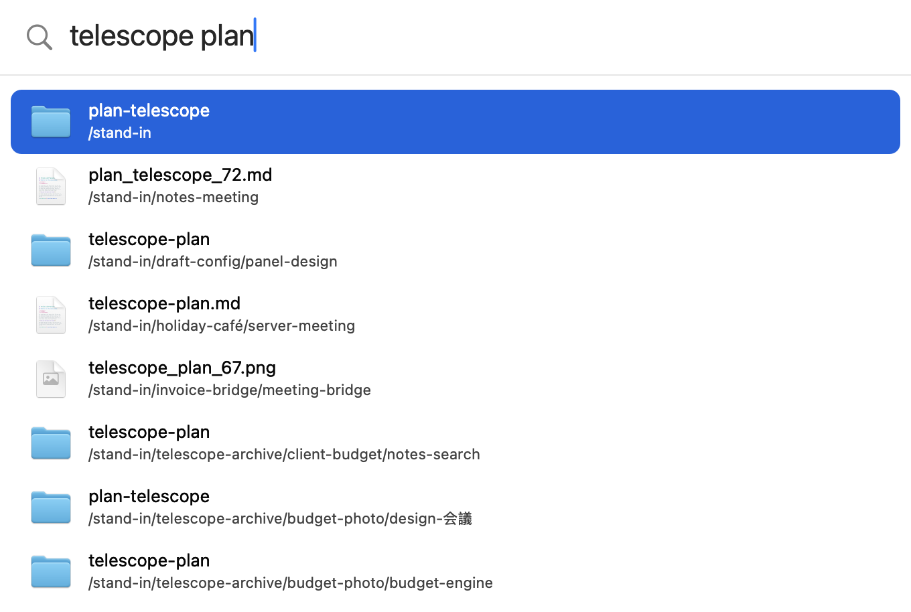
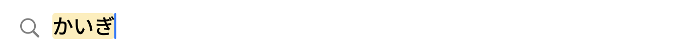
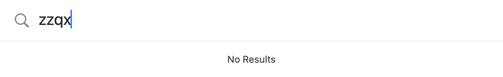
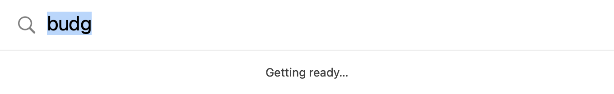
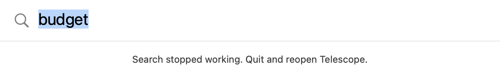

Steps
M1 is done when every check in What M1 must prove passes. Each step lands as its own pull request.
| # | Step | What you get | Status |
|---|---|---|---|
| 1 | Hatch | Swift can call the Rust core: six C-style functions, and a made-up list of 1M names to test with | Done #3 |
| 2 | The window | An app you can launch: the Swift package and build script, ⌘ ⇧ Space, the search box, results, and the states and animations on this page | Done #5 |
| 3 | Keys and feel | Return opens, ⌘ Return shows in Finder, ⌥ ⌘ C copies the path; focus goes back to your app; works over full-screen apps; waits while a Japanese or Chinese word is half-typed | Done #6 |
| 4 | Signing | One 10-year certificate of your own, so macOS keeps Telescope's permissions across 5 rebuilds | Done #7 |
| 5 | Measuring | Every target below timed on your Mac: window shown, results, idle memory and CPU | Done #8 |
| 6 | Download | The .dmg on GitHub, opened through Open Anyway in 4 steps or fewer | Next |
The window
- You press ⌘ ⇧ Space and a single search box appears, a fifth of the way down the screen.
- It grows downward as results arrive, up to 8 rows, and shrinks back when the box is empty.
- Each row shows Finder's icon for the file, its name, and the folder it sits in. Nothing else: no footer, no hints, no timings.

Apple's parts
Nothing is custom-drawn except the selection shape, so the window follows your Mac's light or dark mode, accent colour and text size.
| Part | What Apple provides |
|---|---|
| Text | San Francisco, the system font: 22 pt in the box, 13 pt for names (macOS's standard text size), 11 pt for folders (macOS's small size) |
| Colours | System colours for text, secondary text, divider, background and selection, so light mode, dark mode and your accent colour all come for free |
| Magnifier | The SF Symbol "magnifyingglass" |
| File icons | Finder's own icon for each kind of file and for folders |
| List | AppKit's standard list in its inset style: rounded selection in your accent colour, white text on it, as in Finder and Mail |
| Window | A standard macOS panel with the system's corner radius and shadow, and the title bar and buttons hidden |
| Spacing | Apple's 8-point grid: 56 pt box, 48 pt rows, 8 pt insets |
| Typing | A standard text field, so Japanese and Chinese input, the emoji picker and dictation work as in any Mac app |
Other states




Keys
| Key | Does | Comes in |
|---|---|---|
| ⌘ ⇧ Space | Show or hide the window | M1 step 2 |
| ↑ ↓ | Move the selection | M1 step 2 |
| Esc | Clear the box; a second Esc hides the window | M1 step 2 |
| Return | Open the selected file or folder | M1 step 3 |
| ⌘ Return | Show it in Finder | M1 step 3 |
| ⌥ ⌘ C | Copy its full path, as in Finder (⌘ ⇧ C is taken by clipboard apps such as Maccy) | M1 step 3 |
| ⌘ Y | Preview it with Quick Look; Space does the same while the box is empty | M2, once the list holds real files to preview |
| Tab | Search inside the selected folder | M3 |
| ⌘ I | Details pane: preview, size, dates | M3 |
Behaviour
- The window is built once when Telescope starts, then only shown and hidden. Showing a ready window took about 0.4 ms in the research tests; building one takes 150-275 ms.
- Telescope never becomes the active app, just like Spotlight. When the window hides, the app you were in still has the keyboard.
- It opens on the desktop you're looking at, over full-screen apps too, and on the screen with your mouse.
- Clicking anywhere outside the window hides it.
- No Dock icon and no menu bar; only the hotkey. A menu bar icon can come with settings later.
One keystroke, start to finish
This is what step 1 built. Think of a waiter and a kitchen: the Swift window takes your order and serves the plate, the Rust core cooks, and they talk through a small hatch. Each order gets a ticket number, so a plate for an old order is thrown away.
What M1 must prove
| Check | Target | Measured on your Mac, 27 Oct, while busy (load average 2.5-4.5) |
|---|---|---|
| Hotkey to window drawn | 4 ms, 95% of the time | Missed 95% within 8.3 ms over 40 opens, half within 7.3 ms. Timed from the key press to the window drawn with the keyboard in it; the fade then takes 0.12 s to reach full strength. About 3 ms is macOS handing the keyboard to the window, which Telescope can't speed up |
| Keystroke to results | 25 ms, 95% of the time | Pass 38 of 40 within 23.9 ms, from the key press to the first frame with rows, for a one-letter search (the heaviest kind); the slowest took 48 ms. 12-15 ms of that is searching the 1M names. The window then grows to show all the rows over 0.15 s |
| 8 fast keystrokes | 2 results shown or fewer; the last always wins | Pass 1 shown in 9 of 10 bursts, 2 in one; the box always ended on the last word typed. The test sends all 8 keys at once, so the last one waits behind the others: its results were drawn 23-71 ms after it |
| Focus goes back | 20 of 20 times | Pass 20 of 20, twice: TextEdit kept the keyboard and got every keystroke |
| Over full-screen apps | Works | Pass Shows and searches over full-screen TextEdit, which gets the keyboard back |
| Japanese and Chinese typing | Never opens a result mid-word | By hand Searching and opening both wait while a word is half-typed, and a half-typed accent (⌥ E) left behind when the window hides is kept as typed, so the next search isn't blocked. No Japanese or Chinese input is turned on here to try the real thing |
| Hidden | Under 22 MB, 0% CPU | Pass The window alone (started with TELESCOPE_STAND_IN=0): 21 MB, no CPU time in 60 s. With the 1M made-up names: 66 MB, so the list alone is about 45 MB (decision 6) |
| Swift 6 mode | Builds and runs | Pass Every file compiles with Swift 6's checks and the app runs |
| Permissions after rebuilds | Survive 5 rebuilds | Pass 5 different builds all meet the first build's signing rule, which macOS checks before keeping a permission; ad-hoc builds fail it |
| Downloaded .dmg | Opens through Open Anyway in 4 steps or fewer | Step 6 |
Decisions
Settled on 27 Oct 2026. The screenshots show every one of them.
| # | Question | Decided | Not chosen |
|---|---|---|---|
| 1 | Row layout | Two lines: name, then folder underneath | One line, folder in grey on the right; fits about 11 rows instead of 8 |
| 2 | Fewer than 8 results | The window shrinks to fit them | Always 8 rows tall, so it never changes size |
| 3 | Esc | Clears the box; a second Esc hides the window | Always hides at once |
| 4 | Opening it again | Shows your last search, selected, so typing replaces it (Spotlight does this) | Always starts empty |
| 5 | Position | Always the same spot, a fifth of the way down the screen | Remembers where you dragged it |
| 6 | Idle memory | Judge the window alone against 22 MB, and report the made-up list on its own line: 1M names take about 45 MB by themselves (measured in step 5; the first estimate was 25-30 MB) | Keep 22 MB for everything and cut the made-up list to about 100,000 names |
| 7 | Animations | A quick fade when the window shows and hides, and a smooth height change as results grow or shrink. macOS moves the finished window image itself, so they cost Telescope about 0 MB (an estimate; hidden after showing, the window measured 21 MB). Both stop when Reduce Motion is on. | The selection gliding between rows, or rows animating in while you type: a few MB each, and rows that move while you type make Return open the wrong file |
Timings no longer appear in the window. During M1 they go to a log that the measuring step reads.
Next steps
- Step 1, the hatch, lands as its own pull request.
- Step 2 builds this window for real: the Swift package, the build script, the hotkey, these states and the two animations.